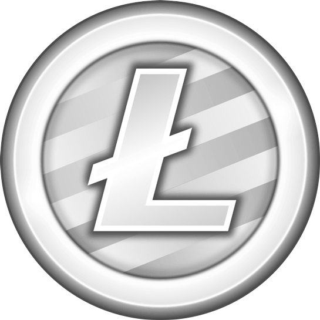
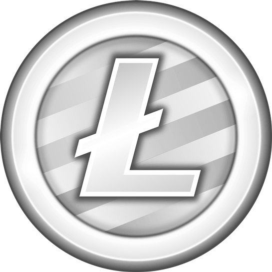

Regulación gubernamental
La regulación de las criptomonedas es un tema crucial ya que los gobiernos están trabajando para establecer leyes que controlen su uso. Países como Estados Unidos están estudiando cómo regular los exchanges asegurandose de que las personas paguen impuestos sobre sus ganancias. En países como China, las criptomonedas enfrentan restricciones severas, con prohibiciones en la minería y el comercio. Estas regulaciones pueden afectar el valor y la accesibilidad de las criptomonedas.
Seguridad y Fraudes
La creciente popularidad de las criptomonedas también ha atraído a hackers y estafadores. Los ataques a exchanges y plataformas DeFi han resultado en pérdidas multimillonarias. Además, algunos esquemas de inversión en criptomonedas resultan ser fraudes. Por eso, es crucial que los inversores y usuarios tomen medidas de seguridad, como el uso de carteras seguras (wallets) y la autenticación de dos factores.
Evolucion tecnologica de blockchain
Las redes blockchain están evolucionando rápidamente para mejorar su eficiencia, seguridad y escalabilidad. Ethereum 2.0 es una actualización importante que busca reducir los costos de transacción y el consumo de energía, haciéndola más viable para un uso masivo. Otras soluciones, como las cadenas laterales (sidechains) y las redes de segunda capa (layer 2), también están en desarrollo para permitir más transacciones sin congestionar la red principal.
Impacto medioambiental
La minería de criptomonedas, especialmente en redes como Bitcoin, consume una enorme cantidad de energía, lo que ha suscitado preocupaciones sobre su impacto ambiental. Países y organizaciones están buscando soluciones más sostenibles, como la transición a redes blockchain más eficientes o el uso de energías renovables. Ethereum, por ejemplo, está migrando a un sistema más ecológico (proof of stake) con Ethereum 2.0.

 
